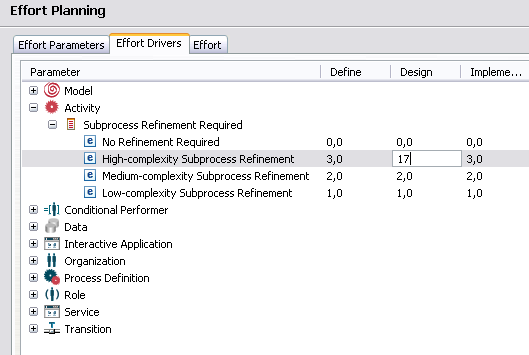

In many BPM projects efforts to model, implement, test and roll-out a given "to be" process model including
have to be estimated.
Efforts for the tasks above can easily be assigned to the different process model elements such as
Project effort contributions will occur in the different phases of a project:
The process effort calculation feature supports the specification of such effort drivers for all project phases, the entry of concrete values for these cost drivers and calculation of the resulting efforts
Two different effort drivers are supported:
Effort drivers can be specified in the Effort Drivers tab of the Effort Planning subpage in the process model property page:
A predefined list of "By Key" and "By Quantity" drivers for all model element types is provided for every model. This list can be changed according to the project needs.
A new "By Key" driver for a process model element can be created by selecting the New "By Key" Driver option in the popup-meu for the corresponding model element node in the Effort Driver table:
A new "By Quantity" driver for a process model element can be created by selecting the New "By Quantity" Driver option in the popup-meu for the corresponding model element node in the Effort Driver table:
You can edit names or values for the different project phases simply by selecting and editing the corresponding table cells in the Effort Drivers table:

New keys for "By Key" drivers can be added using the New Key option in the popup-menu for this driver:
Effort drivers and keys of "By Key" drivers can be deleted by using the corresponding Delete options in the popup-menus for drivers and keys.
Once all effort drivers has been defined corresponding GUI elements to enter concrete effort distributions for all corresponding effort drivers will occur in the Effort Planning subpage of the property pages for all model elements effort drivers have been specified, e.g. the process model itself or
activities
Hereby, "By Key" drivers will occur as combo boxes containing all keys and "By Value" drivers will occur as entry field to enter the concrete value of an effort driver.
Once all effort driver contributions are entered in the model, the total effort can be obtained by pressing the Calculate Effort in the Effort tab of the Effort Planning subpage of the process model property page:
The entire table in the Effort tab of the Effort Planning subpage of the process model property page can be dragged into a table in Microsoft Excel to perform additional calculations (e.g. multiply efforts with resource costs to obtain cost estimates).